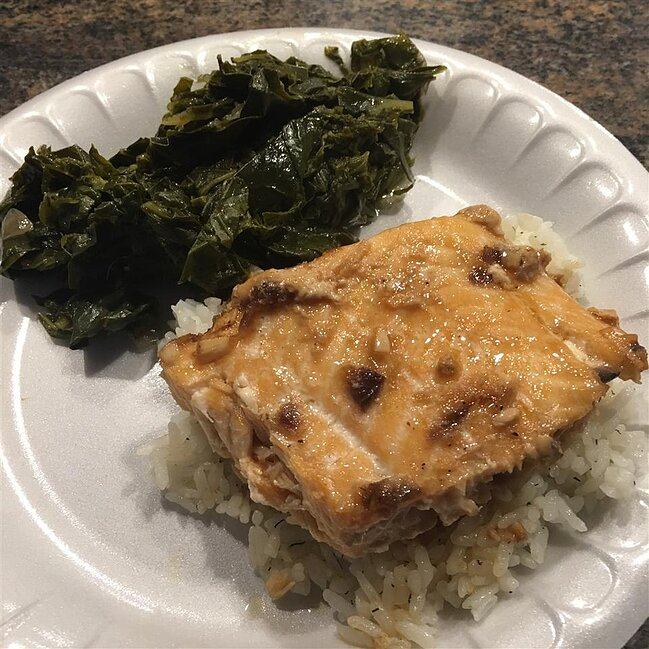

Asian Salmon

Description
Wild salmon is marinated and baked in an Asian-inspired soy and sesame sauce, served with hot cooked rice.
Ingredients
- 2 pounds salmon fillets, with skin
- 2 tablespoons olive oil
- 2 tablespoons rice vinegar
- 2 tablespoons soy sauce
- 1 tablespoon packed brown sugar
- 2 cloves garlic, minced
- 1 pinch ground black pepper
- 2 tablespoons minced onion
- 1 tablespoon sesame oil
- 2 cups long-grain white rice
- 1 teaspoon dried dill weed
- 3 cups water
Steps
- Make several shallow slashes in the skinless side of the salmon fillets. Place fillets skin-side down in a glass baking dish. In a medium bowl, whisk together the olive oil, rice vinegar, soy sauce, brown sugar, garlic, pepper, onion and sesame oil. Pour the liquid over the salmon, cover, and refrigerate for 1 to 2 hours.
- Preheat the oven to 350 degrees F (175 degrees C).
- In a medium saucepan, combine the rice, water, and dill weed. Cover pan, bring to a boil, then reduce heat to low and cook 20 minutes, until rice is tender and water has been absorbed. Allow to stand for 5 minutes before removing lid and fluffing rice with a fork.
- Remove cover from salmon, and bake the fish and the marinade for about 30 minutes, or until fish can be flaked with a fork. Serve salmon over the rice, and pour sauce over.